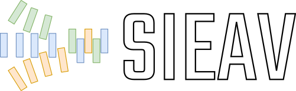

Co-simulation and behavioural verification with VHDL, C/C++ and Python/m¶
About¶
This repository and documentation contain resources used in some sessions of the “Cosimulation for verification of systems on FPGAs” (in spanish, “Cosimulación para la verificación de sistemas sobre FPGAs”) course unit taught in the Master on Advanced Electronic Systems (in spanish, Máster en Sistemas Electrónicos Avanzados) at the University of the Basque Country (UPV/EHU). Find the syllabus: 2019/2020, 2020/2021, 2021/2022.
Important
These sessions are a follow-up of the course unit “Design of digital controllers with FPGAs” (in spanish, “Diseño de controladores digitales con FPGAs”) taught in the same master degree (2021/2022). Hence, attendants are expected to have prior knowledge about the fundamentals of control theory (discretization of state-space representation and transfer-functions, sampling and PID algorithms/implementations). Nonetheless, these sessions are focused on VHDL language features, not on control.
Note
The course is taught in spanish and/or basque (for now); so, some references might not be available in english (yet). Still, most of the documentation and code examples should be readable to any english speaker. Should you find any issue in this regard, please let us know!
Introduction¶
This part of the course is focused on using Free/Libre and Open Source Software (FLOSS) tools for hardware-software co-design with VHDL, C/C++, and Python, Matlab, and/or Octave. A methodology based on co-simulation interfaces, mixed-language Verification Components (VCs) and digital twins is introduced (see wikipedia: Functional verification, wikipedia: Digital twin and wikipedia:Co-simulation, respectively).
For now, synthesis and automatic documentation generation are not included in this course. However, references to FLOSS projects (such as OSVB, EDA², F4PGA (formerly known as SymbiFlow), Renode, etc. ) are provided throughout the documentation.